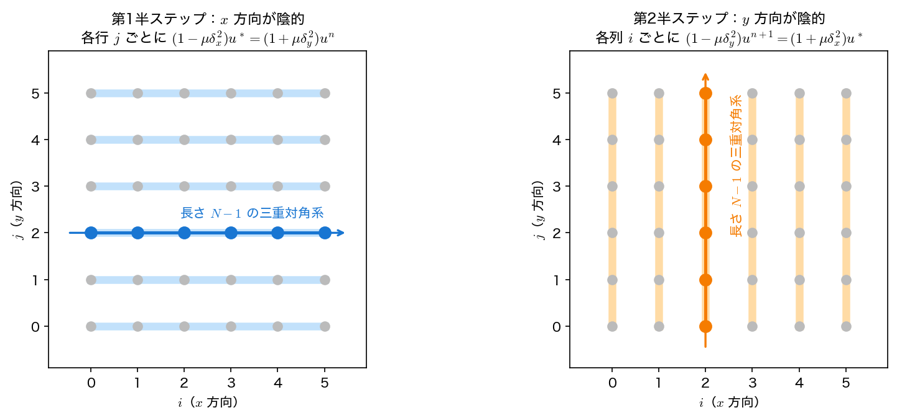
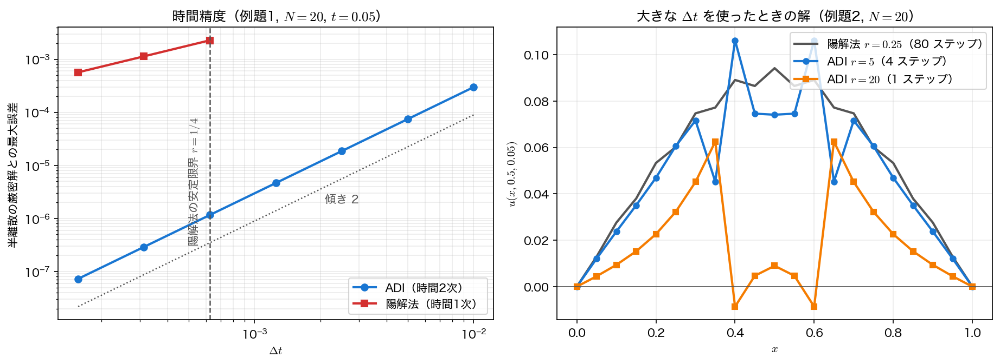

交互方向陰解法（ADI）
前ページで見たとおり、陽解法の総仕事量 \(N^{d+2}\) の内訳は「未知数 \(N^d\)」×「ステップ数 \(N^2\)」である。未知数の個数は問題が決めてしまうが、ステップ数のほうは手法の都合にすぎない。第9回で1次元の拡散方程式に対してやったのと同じく、陰解法にすれば安定条件が消える。問題は、2次元でそれをどう安く実現するかである。
素直な陰解法の値段
後退オイラー法を2次元に当てると、離散ラプラシアン \(L\)（5点差分の作用素）を使って
となる。左辺の行列 \(I-rL\) は、第10回のポアソン方程式の行列と同じ疎構造（1行に5要素、帯幅 \(N-1\)）を持つ。つまり「毎ステップ、第10回の問題を1つ解く」ことになる。
第10回で見たとおり、この連立系は
- ガウス消去では fill-in のせいで \(O(N^4)\) 演算・\(O(N^3)\) メモリ
- 反復法では毎ステップ数十〜数百回の反復
を要する。1次元ならトーマス法が \(O(N)\) で片づけてくれたのに、2次元では急に高くつく。これが「陰解法にすればよい」で話が終わらない理由である。
とはいえ、ポアソン方程式ほど悪くはない
\(I-rL\) の条件数は \(\Delta t\to0\) で \(1\) に近づく（\(\Delta t=0\) なら単位行列そのもの）。\(r\) が数十程度なら反復法の収束はポアソン方程式よりずっと速い。それでも「毎ステップ反復」は避けたい——1ステップの手間を1次元並みに戻せないか、というのが本ページの問いである。
分解のアイデア
出発点は、2次元のクランク＝ニコルソン法である。\(L=\delta_x^2+\delta_y^2\)（\(\delta_x^2u_{ij}=u_{i-1,j}-2u_{ij}+u_{i+1,j}\)、\(\delta_y^2\) も同様）と書くと
ここで両辺を無理やり因数分解する。
厳密には等しくない。展開すると両辺に \(\mu^2\delta_x^2\delta_y^2\) の項が余分に現れるからである。しかし差は
——\(\mathbf u^{n+1}-\mathbf u^n=O(\Delta t)\) だから、1ステップあたり \(O(\Delta t^3)\)、全体では \(O(\Delta t^2)\) の変更にすぎない。もとのクランク＝ニコルソン法が時間2次精度なのだから、因数分解しても2次精度は落ちない。
因数分解の御利益は、\(\delta_x^2\) と \(\delta_y^2\) が別々の括弧に入ったことである。中間値 \(\mathbf u^*\) を導入して2つの半ステップに分ければ、
となる。これが Peaceman–Rachford 型の交互方向陰解法（ADI, alternating direction implicit method, 1955）である。\(\delta_x^2\) と \(\delta_y^2\) は別の添字に作用するので可換で、2式から \(\mathbf u^*\) を消去すれば因数分解した形が正確に再現される。
各半ステップの意味は明快である。第1半ステップでは \(x\) 方向だけを陰的に、\(y\) 方向は陽的に扱う。第2半ステップでその役割を入れ替える。「交互方向」という名前はここから来ている。
中間値 \(u^*\) は「時刻 \(t^{n+1/2}\) の解」ではない
\(\mathbf u^*\) は計算の途中に現れる作業量であって、半分の時刻での近似解ではない。とくに境界における \(u^*\) の値は \(u\) の境界値と一般には一致せず、正しくは \(u^*\big|_{\partial\Omega}=\frac12\left[(I-\mu\delta_y^2)u^{n+1}+(I+\mu\delta_y^2)u^{n}\right]_{\partial\Omega}\) を課さなければ2次精度が落ちる。本回のように境界値が時間によらず \(0\) の場合はこれも \(0\) になるので、単に「境界は \(0\) のまま」で構わない。時間変化する境界条件を扱うときは注意が必要である。
各半ステップは三重対角に戻る
第1半ステップを成分で書き下す。\(j\) を1つ固定すると、右辺は既知の値だけから計算できて
——\(i\) についての三重対角系である。しかも \(j\) ごとに完全に独立している。つまり第1半ステップは
に分解される。第2半ステップは \(i\) を固定して \(j\) 方向に同じことをする。\(N=20\) なら「19 元の三重対角系を 19 本」を2回、1ステップあたり合計 38 本解けばよい。
係数行列 \(\mathrm{tridiag}(-\mu,\,1+2\mu,\,-\mu)\) は \(1+2\mu>2\mu=\lvert-\mu\rvert+\lvert-\mu\rvert\) なので狭義優対角であり、第7回のトーマス法がピボット交換なしにそのまま使える。\(\mu\) がどれだけ大きくても優対角性は崩れない。1次元で作った道具が、2次元の問題にそのまま効くわけである。

無条件安定であること
フォン・ノイマン解析を当てる。\(u^n_{ij}=G^ne^{\mathrm{i}(\theta_xi+\theta_yj)}\) を代入すると、\(\delta_x^2\to-S_x\)、\(\delta_y^2\to-S_y\)（ただし \(S_x=4\sin^2\frac{\theta_x}{2}\)、\(S_y=4\sin^2\frac{\theta_y}{2}\)）と置き換わるから、2つの半ステップはそれぞれ
を与える。\(G^*\) を消去して
\(S_x,S_y\ge0\) かつ \(\mu>0\) なので、各因子は
を満たす（分母が分子より必ず大きい）。したがって積も \(\lvert G\rvert\le1\) で、\(\Delta t\) をどれだけ大きくしても安定である。これが無条件安定（unconditionally stable）である。
正確にいえば A 安定はスカラーのテスト方程式についての ODE 側の概念（第6回）で、いまここで示したのは「フーリエモードごとの増幅率が \(1\) を超えない」という PDE 側の性質である。両者が言い換えになるのは、5点差分の行列が正規で、その固有ベクトルがまさにフーリエモードだからで、以下では区別せずに「A 安定」と呼ぶ。
各因子は1次元の台形則の増幅率そのものであることに注意したい。ADI とは要するに、2次元の問題を「\(x\) 方向の台形則」と「\(y\) 方向の台形則」の積に分解した手法である。
L 安定ではない
無条件安定は「発散しない」ことしか言っていない。\(\Delta t\) を大きくしたとき、消えるべき成分がちゃんと消えるかは別の話である。
いちばん速く消えるべきなのは最高波数、すなわち市松モード \(\theta_x=\theta_y=\pi\)（\(S_x=S_y=4\)）である。半離散系の固有値が最も負に大きい成分で、真の解ではただちに消える。ところが \(r\to\infty\)（\(\mu\to\infty\)）の極限で
——まったく減衰しない。しかも符号が2回反転して \(+1\) になるので、第9回のクランク＝ニコルソン法のように振動しながら減るのではなく、そのまま居座る。これが「A 安定だが L 安定ではない」ということである（第6回）。
正確にいえば、この \(G\to+1\) は市松モードだけの話ではない。\(k=l\) のモードでは \(G=\left(\frac{1-\mu S_k}{1+\mu S_k}\right)^2\) が完全平方なので、\(r=2/S_k\) でちょうど \(0\) になり、そこを越えると \(+1\) へ引き返す。\(S_k\) は波数とともに大きくなるから \(2/S_k\) は小さくなり、\(\Delta t\) を上げていくと高波数から順に「減衰しない側」へ入っていく。\(N=20\) なら最高波数は \(r=0.50\) で、基本モードは \(r=81.2\) で谷を通る——実用的な \(\Delta t\) の範囲でまず問題になるのが高波数だ、というだけのことである（演習3で \(r=1000\) まで振って確かめる）。
第6回の台形則、第9回のクランク＝ニコルソン法、そして本回の ADI ——同じ弱点が次元を変えて3度現れたことになる。対処法も同じで、計算の最初の数ステップだけ L 安定な後退オイラー型の手法（2次元なら \(\mu\delta^2\) の係数を変えた形）で刻んでおき、高波数成分を落としてから ADI に移る。第9回で触れたラナカー（Rannacher）起動法である。演習3で、この居座りを実際に測る。
時間精度とコスト
ADI の時間精度は、因数分解のところで見たとおりクランク＝ニコルソン法と同じ 2次である。ただし測り方に注意がいる。第9回と同じく、連続の厳密解と比べると空間の離散化誤差 \(O(h^2)\) で頭打ちになって時間の次数が見えないので、半離散化した常微分方程式の厳密解
と比較する。\(\lambda\) は2次元の離散ラプラシアンの最小固有値（絶対値最小）で、\(x\) 方向と \(y\) 方向が同じだけ寄与するため1次元の2倍になっている。

コストを比べる。1ステップあたりの演算量は、格子点1つにつき
- 陽解法：\(4\) 回の加算と \(1\) 回の乗算＋更新で \(\approx6\) 演算 → \(6N^2\)
- ADI：右辺の組み立てとトーマス法の前進消去・後退代入を \(x\)/\(y\) の2回 → \(\approx24N^2\)
で、ADI は1ステップが4倍高い。しかし \(\Delta t\) を自由に選べるので、\(N=100\) で \(t=0.05\) まで解く場合は
| 手法 | \(r\) | ステップ数 | 1ステップ | 総演算量 | 最大誤差 |
|---|---|---|---|---|---|
| 陽解法 | \(0.25\)（限界） | 2000 | \(6.0\times10^4\) | \(1.2\times10^8\) | \(6.05\times10^{-5}\) |
| ADI | \(5.00\) | 100 | \(2.4\times10^5\) | \(2.4\times10^7\) | \(2.95\times10^{-5}\) |
——5倍速く、しかも誤差は小さい。ADI が時間2次精度なので、\(\Delta t\) を20倍にしても陽解法（時間1次）より正確でいられるからである。
差はこれで頭打ちにならない。格子を細かくすると陽解法のステップ数は \(N^2\) で増えるのに、ADI のステップ数は精度の要求だけで決まる（\(\Delta t\propto h\) に取れば時間・空間の誤差が釣り合う）。\(N\) を2倍にすれば陽解法は4倍のステップ、ADI は2倍のステップ——比は開く一方である。
サンプルコード
無条件安定・時間2次精度・コストの3点を1本で確かめる。トーマス法は第7回のものをそのまま持ってきている。
#include <stdio.h>
#include <stdlib.h>
#include <math.h>
/* 第12回 交互方向陰解法（ADI, Peaceman-Rachford 法）
u_t = alpha (u_xx + u_yy), [0,1]^2, 境界で u = 0
1 ステップを2つの半ステップに分け、それぞれ1方向だけを陰的に扱う。
第1半: (1 - mu dxx) u* = (1 + mu dyy) u^n （x 方向が陰的）
第2半: (1 - mu dyy) u^{n+1} = (1 + mu dxx) u* （y 方向が陰的）
ただし mu = r/2 = alpha dt/(2 dx^2)。どちらの半ステップも各格子線ごとに
独立した三重対角系になるので、第7回のトーマス法がそのまま使える。
増幅率は G = (1 - mu Sx)(1 - mu Sy) / ((1 + mu Sx)(1 + mu Sy)),
Sx = 4 sin^2(theta_x/2) >= 0 なので、どんな dt でも |G| <= 1（無条件安定）。 */
static const double PI = 3.14159265358979323846;
static const double ALPHA = 1.0;
static const double TEND = 0.05;
/* 中央の塊 0.4 <= x, y <= 0.6 の判定。浮動小数点で 0.6 と比べると上端の格子点が
落ちることがあるので、格子番号のまま 2N/5 <= i <= 3N/5 と判定する（本文と同じ）。 */
static int in_blob(int i, int N) { return 5*i >= 2*N && 5*i <= 3*N; }
/* 三重対角系のトーマス法（第7回で実装したものと同じ） */
static void thomas(int n, const double a[], const double b[], const double c[],
const double d[], double x[])
{
double cp[n], dp[n];
cp[0] = c[0]/b[0];
dp[0] = d[0]/b[0];
for (int i = 1; i < n; i++) {
double m = b[i] - a[i]*cp[i-1];
cp[i] = c[i]/m;
dp[i] = (d[i] - a[i]*dp[i-1])/m;
}
x[n-1] = dp[n-1];
for (int i = n - 2; i >= 0; i--) x[i] = dp[i] - cp[i]*x[i+1];
}
/* ADI を1ステップ進める。us は中間値 u* を入れる作業配列（境界は 0 のまま） */
static void adi_step(int N, double mu, double (*u)[N+1], double (*us)[N+1])
{
int m = N - 1;
double a[m], b[m], c[m], d[m], y[m];
for (int i = 0; i < m; i++) { a[i] = -mu; b[i] = 1.0 + 2.0*mu; c[i] = -mu; }
for (int j = 1; j < N; j++) { /* 第1半ステップ: x 方向に解く */
for (int i = 1; i < N; i++)
d[i-1] = u[i][j] + mu*(u[i][j-1] - 2.0*u[i][j] + u[i][j+1]);
thomas(m, a, b, c, d, y);
for (int i = 1; i < N; i++) us[i][j] = y[i-1];
}
for (int i = 1; i < N; i++) { /* 第2半ステップ: y 方向に解く */
for (int j = 1; j < N; j++)
d[j-1] = us[i][j] + mu*(us[i-1][j] - 2.0*us[i][j] + us[i+1][j]);
thomas(m, a, b, c, d, y);
for (int j = 1; j < N; j++) u[i][j] = y[j-1];
}
}
/* 陽解法（FTCS）を1ステップ進める */
static void ftcs_step(int N, double r, double (*u)[N+1], double (*un)[N+1])
{
for (int i = 1; i < N; i++)
for (int j = 1; j < N; j++)
un[i][j] = u[i][j] + r*(u[i-1][j] + u[i+1][j]
+ u[i][j-1] + u[i][j+1] - 4.0*u[i][j]);
for (int i = 1; i < N; i++)
for (int j = 1; j < N; j++) u[i][j] = un[i][j];
}
/* method = 0: 陽解法, 1: ADI。init = 0: sin sin, 1: 中央の熱の塊。
ref = 0: 連続の厳密解と比較, 1: 半離散の厳密解と比較 */
static void run(int N, double r, int nt, int method, int init, int ref,
double *umax, double *umin, double *err, FILE *fp, double tag)
{
double dx = 1.0/N, dt = r*dx*dx/ALPHA, t = nt*dt;
double (*u)[N+1] = calloc((size_t)(N+1)*(N+1), sizeof(double));
double (*w)[N+1] = calloc((size_t)(N+1)*(N+1), sizeof(double));
for (int i = 1; i < N; i++)
for (int j = 1; j < N; j++) {
double x = i*dx, y = j*dx;
u[i][j] = (init == 0) ? sin(PI*x)*sin(PI*y)
: ((in_blob(i, N) && in_blob(j, N)) ? 1.0 : 0.0);
}
for (int n = 0; n < nt; n++) {
if (method == 0) ftcs_step(N, r, u, w);
else adi_step(N, 0.5*r, u, w);
}
/* 半離散化した常微分方程式の固有値（第9回と同じ考え方） */
double lam = -8.0*ALPHA/(dx*dx)*sin(PI*dx/2.0)*sin(PI*dx/2.0);
double decay = (ref == 0) ? exp(-2.0*ALPHA*PI*PI*t) : exp(lam*t);
double mx = -1e30, mn = 1e30, e = 0.0;
for (int i = 0; i <= N; i++)
for (int j = 0; j <= N; j++) {
if (u[i][j] > mx) mx = u[i][j];
if (u[i][j] < mn) mn = u[i][j];
double d = fabs(u[i][j] - decay*sin(PI*i*dx)*sin(PI*j*dx));
if (d > e) e = d;
}
if (fp) /* 作図用: y = 0.5 の断面だけ書き出す */
for (int i = 0; i <= N; i++)
fprintf(fp, "%.1f %.10e %.10e\n", tag, i*dx, u[i][N/2]);
free(u); free(w);
*umax = mx; *umin = mn; *err = e;
}
int main(void)
{
double mx, mn, e, mx2, mn2, e2;
printf("=== 交互方向陰解法（ADI）===\n");
printf("alpha = %.1f, t = %.2f まで、N = 20 分割（dx = 0.05, 安定限界は r = 0.25）\n\n",
ALPHA, TEND);
printf("--- (1) 無条件安定: 例題2（中央の熱の塊、初期値は 0 <= u <= 1）---\n");
printf(" r ステップ数 dt 陽解法 max|u| ADI max u ADI min u\n");
/* 作図用: 陽解法 r=0.25 と ADI r=5, r=20 の断面に 0,1,2 の番号を付けて書き出す */
FILE *fc = fopen("adi_cut.dat", "w");
if (fc == NULL) { perror("adi_cut.dat"); return 1; }
fprintf(fc, "# case(0=explicit r=0.25, 1=ADI r=5, 2=ADI r=20) x u\n");
double rl[] = {0.25, 1.0, 5.0, 20.0};
for (int i = 0; i < 4; i++) {
int nt = (int)(20.0/rl[i] + 0.5);
run(20, rl[i], nt, 0, 1, 0, &mx, &mn, &e, (i == 0) ? fc : NULL, 0.0);
run(20, rl[i], nt, 1, 1, 0, &mx2, &mn2, &e2,
(i >= 2) ? fc : NULL, (i == 2) ? 1.0 : 2.0);
printf(" %6.2f %5d %.6f %10.3e %10.3e %10.3e\n",
rl[i], nt, rl[i]*0.05*0.05/ALPHA,
(fabs(mx) > fabs(mn) ? fabs(mx) : fabs(mn)), mx2, mn2);
}
printf(" 陽解法は r > 0.25 で爆発する。ADI は r = 20（1ステップで終端）でも有界。\n");
fclose(fc);
printf(" ただし ADI の min u はわずかに負になる＝最大値原理までは保証されない。\n");
printf("\n--- (2) 時間精度（例題1。半離散の厳密解と比べて空間誤差を除く）---\n");
printf(" r ステップ数 ADI の誤差 誤差比 陽解法の誤差 誤差比\n");
double pa = 0.0, pe = 0.0;
/* 作図用: 時間刻みと誤差。陽解法が計算できない行は -1 を書いて印にする */
FILE *fa = fopen("adi_accuracy.dat", "w");
if (fa == NULL) { perror("adi_accuracy.dat"); return 1; }
fprintf(fa, "# r dt steps err_adi err_explicit(-1: 不安定)\n");
double r2[] = {4.0, 2.0, 1.0, 0.5, 0.25, 0.125, 0.0625};
for (int i = 0; i < 7; i++) {
int nt = (int)(20.0/r2[i] + 0.5);
run(20, r2[i], nt, 1, 0, 1, &mx, &mn, &e, NULL, 0.0);
printf(" %6.4f %5d %10.4e", r2[i], nt, e);
if (pa > 0.0) printf(" %6.3f", pa/e);
else if (r2[i] <= 0.25) printf(" ");
pa = e;
e2 = -1.0;
if (r2[i] <= 0.25) {
run(20, r2[i], nt, 0, 0, 1, &mx2, &mn2, &e2, NULL, 0.0);
printf(" %10.4e", e2);
if (pe > 0.0) printf(" %6.3f", pe/e2);
pe = e2;
}
printf("\n");
fprintf(fa, "%.4f %.10e %d %.10e %.10e\n",
r2[i], r2[i]*0.05*0.05/ALPHA, nt, e, e2);
}
fclose(fa);
printf(" ADI は誤差比 4（時間2次）、陽解法は 2（時間1次）。r > 0.25 は陽解法では計算できない。\n");
printf("\n--- (3) 同じ終端時刻に到達するコスト（例題1, N = 100, t = %.2f）---\n", TEND);
printf(" 手法 r ステップ数 1ステップの演算量 総演算量 最大誤差\n");
int nte = (int)(0.05/(0.25/(ALPHA*100.0*100.0)) + 0.5);
int nta = (int)(0.05/(5.0/(ALPHA*100.0*100.0)) + 0.5);
run(100, 0.25, nte, 0, 0, 0, &mx, &mn, &e, NULL, 0.0);
run(100, 5.0, nta, 1, 0, 0, &mx2, &mn2, &e2, NULL, 0.0);
printf(" 陽解法 %5.2f %5d %8.1e (6N^2) %8.2e %10.3e\n",
0.25, nte, 6.0*100*100, 6.0*100*100*nte, e);
printf(" ADI %5.2f %5d %8.1e (24N^2) %8.2e %10.3e\n",
5.0, nta, 24.0*100*100, 24.0*100*100*nta, e2);
printf(" ADI は1ステップの手間が4倍だが、ステップ数を20分の1にできるので5倍速い。\n");
printf(" 格子を細かくするほど陽解法のステップ数は N^2 で増えるため、差は開き続ける。\n");
return 0;
}
コンパイル・実行:
実行結果
=== 交互方向陰解法（ADI）===
alpha = 1.0, t = 0.05 まで、N = 20 分割（dx = 0.05, 安定限界は r = 0.25）
--- (1) 無条件安定: 例題2（中央の熱の塊、初期値は 0 <= u <= 1）---
r ステップ数 dt 陽解法 max|u| ADI max u ADI min u
0.25 80 0.000625 9.414e-02 9.189e-02 0.000e+00
1.00 20 0.002500 7.524e+14 9.183e-02 0.000e+00
5.00 4 0.012500 1.097e+05 1.521e-01 0.000e+00
20.00 1 0.050000 3.900e+01 4.352e-01 -5.995e-02
陽解法は r > 0.25 で爆発する。ADI は r = 20（1ステップで終端）でも有界。
ただし ADI の min u はわずかに負になる＝最大値原理までは保証されない。
--- (2) 時間精度（例題1。半離散の厳密解と比べて空間誤差を除く）---
r ステップ数 ADI の誤差 誤差比 陽解法の誤差 誤差比
4.0000 5 2.9768e-04
2.0000 10 7.4361e-05 4.003
1.0000 20 1.8586e-05 4.001
0.5000 40 4.6464e-06 4.000
0.2500 80 1.1616e-06 4.000 2.2761e-03
0.1250 160 2.9039e-07 4.000 1.1351e-03 2.005
0.0625 320 7.2599e-08 4.000 5.6682e-04 2.003
ADI は誤差比 4（時間2次）、陽解法は 2（時間1次）。r > 0.25 は陽解法では計算できない。
--- (3) 同じ終端時刻に到達するコスト（例題1, N = 100, t = 0.05）---
手法 r ステップ数 1ステップの演算量 総演算量 最大誤差
陽解法 0.25 2000 6.0e+04 (6N^2) 1.20e+08 6.052e-05
ADI 5.00 100 2.4e+05 (24N^2) 2.40e+07 2.951e-05
ADI は1ステップの手間が4倍だが、ステップ数を20分の1にできるので5倍速い。
格子を細かくするほど陽解法のステップ数は N^2 で増えるため、差は開き続ける。
読み取るべき点が4つある。
- 無条件安定は本当に無条件である。 \(r=20\) は安定限界の 80 倍で、\(t=0.05\) をたった1ステップで飛び越えている。それでも ADI の解は有界にとどまる。同じ設定の陽解法は \(r=1\) の時点で \(7.5\times10^{14}\) に爆発している。
- しかし \(\min u=-0.060\) が出ている。 初期値も境界値も非負なのだから、真の解に負の値は現れない。\(r=20\) の ADI は安定だが物理的に正しくない——これが L 安定でないことの帰結である。\(r\le5\) では \(\min u=0\) に踏みとどまっており、「大きな \(\Delta t\) を使うなら高波数の扱いに注意」という但し書きが実際的な意味を持つ範囲が見える。
- 誤差比がきれいに \(4.000\) に収束する。 半離散の厳密解と比べているので空間誤差が完全に落ちており、時間の次数だけが見えている。同じ列の陽解法は \(2.005\to2.003\) で1次精度。\(r>0.25\) の行に陽解法の数字がないのは、計算できないからである。
- \(r=4\) の ADI（5 ステップ）の誤差 \(3.0\times10^{-4}\) は、\(r=0.25\) の陽解法（80 ステップ）の誤差 \(2.3\times10^{-3}\) より小さい。 16 分の1のステップ数で、8倍正確——「陰解法は1ステップが高い」という直感が、実際の計算では逆転する典型例である。
可視化
adi.c は2つのファイルを書き出す。adi_accuracy.dat（r dt steps err_adi err_explicit）は (2) の表そのもので、陽解法が計算できない行には誤差の代わりに \(-1\) を入れてある。adi_cut.dat（case x u）は (1) の計算のうち3つ——陽解法 \(r=0.25\)、ADI \(r=5\)、ADI \(r=20\)——の \(y=0.5\) 断面である。「この行は計算していない」を数値で表すときは、あり得ない値を1つ決めて印にするのが簡単で確実である（ここでは誤差が負にならないことを使っている）。
import numpy as np
import matplotlib.pyplot as plt
a = np.loadtxt("adi_accuracy.dat")
dt, err_adi, err_exp = a[:, 1], a[:, 3], a[:, 4]
ok = err_exp > 0.0 # -1 の行は陽解法が発散して計算できない
fig, (ax1, ax2) = plt.subplots(1, 2, figsize=(12.4, 4.6))
ax1.loglog(dt, err_adi, "o-", lw=2.0, label="ADI")
ax1.loglog(dt[ok], err_exp[ok], "s-", lw=2.0, label="explicit (FTCS)")
ax1.loglog(dt, 0.3 * err_adi[0] * (dt / dt[0]) ** 2, ":", color="gray")
ax1.text(dt[2], 0.1 * err_adi[0] * (dt[2] / dt[0]) ** 2, "slope 2", color="gray")
ax1.axvline(0.25 * 0.05 ** 2, color="gray", ls="--") # 陽解法の安定限界 r = 1/4
ax1.text(0.25 * 0.05 ** 2 * 0.9, 3e-7, "explicit stability limit r = 1/4",
color="gray", rotation=90, va="bottom", ha="right")
ax1.set_xlabel("dt")
ax1.set_ylabel("max error vs. semi-discrete exact solution")
ax1.set_title("Time accuracy (N = 20, t = 0.05)")
ax1.legend(loc="lower right")
ax1.grid(alpha=0.3, which="both")
# 最小二乗で傾きを測る（ADI は 2、陽解法は 1 になるはず）
for name, y, m in [("ADI", err_adi, np.ones(len(dt), bool)), ("explicit", err_exp, ok)]:
print(f"{name}: slope = {np.polyfit(np.log(dt[m]), np.log(y[m]), 1)[0]:.3f}")
c = np.loadtxt("adi_cut.dat")
labels = ["explicit r = 0.25 (80 steps)", "ADI r = 5 (4 steps)", "ADI r = 20 (1 step)"]
for k, lab in enumerate(labels):
s = c[np.isclose(c[:, 0], k)]
ax2.plot(s[:, 1], s[:, 2], "o-" if k else "-", lw=2.0, ms=5, label=lab)
print(f"{lab:30s} max = {s[:, 2].max():.6f} min = {s[:, 2].min():10.3e}")
ax2.axhline(0.0, color="gray", lw=0.8)
ax2.set_xlabel("x")
ax2.set_ylabel("u(x, 0.5, 0.05)")
ax2.set_title("Cross section at y = 0.5 (blob, N = 20)")
ax2.legend(loc="upper right")
ax2.grid(alpha=0.3)
fig.tight_layout()
fig.savefig("adi_vs_explicit.png", dpi=150)
実行:
傾きは ADI: slope = 2.000、explicit: slope = 1.003 と出る。図にする前に数値で出しておくと、目で見た印象と食い違ったときにすぐ気づける。右の図では axhline(0.0) で \(u=0\) の線を引いてある——\(r=20\) の曲線がこの線を下に突き抜け、\(\min u=-8.607\times10^{-3}\) まで落ちているのが、L 安定でないことの目に見える証拠である。
断面の最大値も出しておくと面白いことが分かる。\(r=20\) の断面の最大は \(0.0625\) で、表 (1) の \(\max u=0.4352\)（場全体の最大）よりずっと小さい。塊の初期条件は \(u_0(x,y)=f(x)f(y)\) という積の形をしており、ADI の各半ステップも1方向ずつしか触らないので、解も \(g(x)g(y)\) の形を保つ。\(g\) が大きな \(\Delta t\) でぎざぎざに振動するため、場全体の最大は中心線から外れた場所に現れるのである。断面だけを見て「解が小さくなった」と早合点しないこと。
なお ADI の2つの半ステップの図は計算結果ではなく手順を説明する概念図なので、データからは描けない。
まとめ
- 2次元の素直な陰解法は第10回の5点差分の連立系を毎ステップ解くことになり高くつく。
- ADI（Peaceman–Rachford 法）は、クランク＝ニコルソン法の作用素を \(\left(I-\mu\delta_x^2\right)\left(I-\mu\delta_y^2\right)\) と因数分解する。生じる誤差は \(O(\Delta t^3)\)／ステップなので、時間2次精度は保たれる。
- 1ステップは2つの半ステップからなり、それぞれ\(N-1\) 元の三重対角系を \(N-1\) 本解くだけ。係数行列は優対角なのでトーマス法がそのまま使える。
- 増幅率は \(G=\dfrac{1-\mu S_x}{1+\mu S_x}\cdot\dfrac{1-\mu S_y}{1+\mu S_y}\)（\(S=4\sin^2\frac{\theta}{2}\ge0\)）で、常に \(\lvert G\rvert\le1\) ——無条件安定（A 安定）。
- ただし \(r\to\infty\) で市松モードの \(G\to+1\) となり、L 安定ではない。第6回の台形則・第9回のクランク＝ニコルソン法と同じ弱点である。対処はラナカー起動法。
- \(N=100\)、\(t=0.05\) の例で、ADI は陽解法の 5倍速く、誤差も約半分。格子を細かくするほど差は開く。